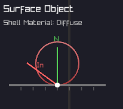
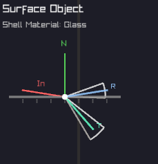

Ray Tracer in Flatland Ruby
Interactive Visualization of Light Transport Algorithms
A 2D implementation revealing the mathematical structures and sampling strategies underlying physically-based rendering—from path integration to BSDF visualization.
Technical Features
Interactive Path Construction
Watch paths being built vertex by vertex with full control over execution. Each bounce shows the BSDF/phase function distribution, the sampled direction, and the accumulated throughput. Russian Roulette termination is visualized with adjustable parameters for minimum bounces and survival probability.
Step through with SPACE, generate new samples with R, and observe how different materials and media affect path construction in real-time.
BSDF & Phase Function Viewer
Click any surface or volume to inspect its scattering properties. The system draws the actual probability distribution used for importance sampling—Lambertian cosine lobes for diffuse, delta peaks for mirrors, Fresnel-modulated transmission/reflection for dielectrics, and Henyey-Greenstein distributions for participating media.
This direct visualization reveals the connection between material properties and Monte Carlo sampling strategies, making abstract BSDFs tangible and understandable.
Dielectric Materials
Proper implementation of refractive materials with Snell's law and Fresnel equations. The system handles total internal reflection, automatically switches between refraction and reflection based on Fresnel terms, and maintains correct IOR ratios when entering/exiting materials.
Watch light paths split at dielectric interfaces, with the BSDF viewer showing the view-dependent nature of glass: more reflection at grazing angles, more transmission when perpendicular.

Next Event Estimation (Path Tracer)
At each path vertex, explicitly sample the light source to estimate direct illumination. Shadow rays test visibility, and contributions are weighted by the BSDF and geometric terms. This dramatically reduces variance compared to naive path tracing, especially for small light sources.
The visualization shows both the random walk and the explicit light connections, making it clear why NEE is essential for efficient rendering when lights are hard to hit randomly.
Light Tracing (Bidirectional)
Dual to path tracing: originate rays from light sources and connect to the camera sensor. This algorithm excels when the camera is easy to hit but lights are difficult to reach from the camera (e.g., caustics through refractive objects, small apertures).
Light tracing demonstrates the reciprocity of light transport: paths are valid in both directions. The efficiency depends on sensor visibility and aperture size—larger apertures make sensor connections easier.
Next Event Estimation (Light Tracer)
Just as path tracing benefits from explicit light sampling, light tracing benefits from explicit sensor sampling. At each scattering event, attempt a direct connection to the camera by sampling points on the sensor and testing if the ray passes through the aperture.
This is particularly powerful for scenes with large light sources but challenging sensor visibility—the exact opposite case where path tracing with NEE excels.
Camera Models & Depth of Field
Adjustable thin-lens camera with arbitrary sensor width and aperture radius. Pinhole mode (zero aperture) provides infinite depth of field, while larger apertures create focal blur. The system visualizes lens sampling: rays from a pixel must pass through a random point on the aperture disk.
This is rarely seen in educational demos—most use fixed pinhole cameras. Here, you can continuously adjust parameters and observe how aperture size affects both visual appearance and algorithmic efficiency (especially for light tracing).
Monte Carlo Convergence Visualization
From Noise to Smooth Estimation
Monte Carlo path tracing is an unbiased estimator: with infinite samples, it converges to the correct solution. But in practice, we work with finite samples, and the visualization makes this convergence process explicit and observable.
Few samples: High variance, noisy estimate
Many samples: Variance decreases as O(1/√N)
Path Color Evolution
Paths start white and accumulate color as they interact with surfaces and media. Each interaction multiplies the path's throughput by the BSDF or phase function value and the surface/medium color. This throughput accumulation is the physical basis of light transport: energy is absorbed and scattered at each bounce.
Watch paths gradually shift from white → colored as they bounce through the scene. A path hitting a red surface becomes red-tinted, then if it bounces off a blue surface, becomes purple. This multiplicative color mixing reveals how light carries information about every surface it touches.
Sensor Inspector: Per-Pixel Path History
Click any pixel to inspect its sample history. The sensor inspector shows every path contribution that hit that pixel—not just the final average, but the individual random samples.
Watch new samples accumulate in real-time. Each path contributes a different radiance value (some bright, some dim, some zero). The displayed pixel color is the average over all samples—the Monte Carlo estimator in action. As more samples arrive, the variance decreases and the estimate stabilizes.
Early stage: Sparse samples, high variance per pixel
Converged: Dense sample history, stable average
Pedagogical insight: Most renderers only show the final image. Here, you can see the raw Monte Carlo samples that produce it—understanding that pixel values aren't "computed" but rather estimated statistically through random sampling.
Material & Phase Function Diversity
Beyond Simple Diffuse: A Production Material Library
While the final rendered image is 1D (a line of pixels), the material interactions are fully 2D with rich BSDF and phase function implementations. This diversity is crucial for understanding how different scattering behaviors affect light transport algorithms.
Incoming-Direction Dependence
A critical material property: does the outgoing distribution change based on where light came from? This distinction profoundly affects both physical appearance and algorithmic complexity.
📍 Incoming-Independent
Diffuse (Lambertian): Outgoing distribution is always a cosine lobe around the normal, regardless of incoming direction. Click a diffuse surface from any angle—the BSDF viewer shows the same pattern.
🔄 Incoming-Dependent
Mirrors, Glass, Glossy, Microfacets: Outgoing distribution rotates and changes shape based on view direction. The BSDF viewer updates dynamically as you change the incoming ray angle—revealing view-dependent reflections and refractions.
Implemented Material Types
Perfect Specular
Delta BSDF, mirror reflection
Glossy (Phong)
Diffuse + specular lobe
Microfacet (GGX)
Physically-based roughness
Coated Diffuse
Two-lobe material (paint-like)
Phase Function
Henyey-Greenstein for volumes
Complete Material List (10+ Types)
- Diffuse – Lambertian, incoming-independent
- Mirror – Perfect specular reflection
- Glass – Dielectric with Fresnel & Snell's law
- Glossy – Phong model (diffuse + specular)
- Microfacet – GGX/Trowbridge-Reitz NDF
- Anisotropic – Directional roughness (brushed metal)
- Coated Diffuse – Two-lobe BSDF (clear coat)
- Retroreflective – Back-scattering (road signs)
- Emissive – Light sources with directionality
- Participating Media – Henyey-Greenstein phase function
Why Material Variety Matters (Even in 2D)
The final render is a 1D image, so visually it's hard to distinguish between a glossy lobe and a microfacet BSDF. But that's precisely why this demo is valuable: it reveals the underlying scattering behavior that you can't see in the final pixels.
Educational goal: Understand that materials aren't defined by their appearance, but by their scattering distributions. A Phong lobe and GGX lobe might produce similar 1D renders, but their BSDF shapes are different—and that difference affects importance sampling efficiency, variance, and convergence rates.
By implementing a production-grade material library, this demo shows that physically-based rendering isn't about pretty pictures—it's about mathematically correct scattering models that respect energy conservation, reciprocity, and Helmholtz reciprocity.
Theoretical Foundation & Algorithms
The Rendering Equation
The Radiative Transfer Equation
Path Tracing
Path tracing traces rays from the camera through each pixel, building light paths by randomly sampling BSDF directions at surface interactions. At each bounce, the path can terminate (Russian roulette) or continue, accumulating radiance contributions. Next Event Estimation (NEE) explicitly samples light sources at each vertex to reduce variance for direct illumination.
Light Tracing
Light tracing inverts the process: rays originate from light sources and trace outward, connecting to the camera via lens sampling. This approach excels when illumination is dominated by small, bright sources or caustics. Like path tracing, it benefits from NEE by explicitly connecting to the sensor.
Participating Media
Within volumes, rays undergo scattering events sampled according to the medium's extinction coefficient (σₜ). At each interaction, the phase function determines the new direction. Volume rendering requires careful handling of transmittance and multiple scattering events to capture phenomena like fog, subsurface scattering, and volumetric caustics.
Algorithm Efficiency Analysis
Understanding Algorithmic Trade-offs
The efficiency of rendering algorithms is highly scene-dependent. There is no universally "best" algorithm—each excels under different conditions based on the geometry of light transport.
Path Tracing Efficiency
Challenge: When light sources are small, randomly hitting them is difficult. Paths that fail to reach the light contribute zero, leading to high variance and slow convergence.
Solution: Next Event Estimation (NEE) explicitly samples the light at each vertex. Instead of hoping to randomly hit the light, we deterministically test visibility with shadow rays. This dramatically improves efficiency—but only when the shadow rays aren't blocked. In scenes with heavy occlusion, many paths still contribute zero.
Light Tracing Efficiency
Challenge: Light must pass through the camera aperture and hit the sensor to register a contribution. The efficiency depends directly on aperture size: larger apertures are easier to hit, while tiny apertures (approaching pinhole) make connections vanishingly rare.
Solution: Next Event Estimation for the sensor—explicitly sample the camera at each vertex. Test if a ray from the scattering point passes through the aperture and hits the sensor. This is the dual of light sampling in path tracing.
Key insight: Light tracing with large apertures can be more efficient than path tracing when lights are large but finding them from the camera is hard (e.g., behind refractive caustics).
NEE Limitations
Next Event Estimation is not a panacea. While it eliminates the randomness of hitting lights/sensors, it introduces a new problem: occlusion. Every explicit connection requires a visibility test—if there's an occluder in the way, the contribution is zero.
In scenes with complex geometry and many occluders, a significant fraction of shadow rays are blocked, leading to wasted computation. The optimal strategy often involves combining multiple techniques (e.g., BDPT, which builds paths from both ends and connects all pairs).
Video Demonstrations
System Overview
Real-time visualization of light paths, surface interactions, and BSDF sampling. The interface allows arbitrary modification of camera parameters (sensor width, aperture size) and switching between rendering algorithms on the fly.
Dynamic Aperture Control
Interactive aperture adjustment demonstrates depth of field effects in real-time. Larger apertures produce shallower depth of field with visible lens sampling, while smaller apertures approach pinhole behavior with extended focus.
Path Tracing with NEE
Path tracing enhanced with Next Event Estimation: at each surface interaction, shadow rays explicitly sample the light source, significantly reducing variance for direct illumination. Most effective when lights are small but visible from most surface points.
Light Tracing - Large Aperture
Large apertures make light tracing efficient: rays from the light have a good chance of passing through the aperture and hitting the sensor. The wider opening increases the geometric probability of successful connections, leading to faster convergence than path tracing when lights are hard to sample from the camera.
Light Tracing - Small Aperture
Small apertures challenge light tracing: the tiny opening is difficult to hit from random light paths. Most rays miss the aperture entirely, contributing zero. This demonstrates why aperture size is critical to light tracing efficiency—pinhole cameras make this algorithm impractical without NEE.
Light Tracing with NEE
Light tracing combined with Next Event Estimation for the sensor: explicitly sample the camera at each vertex, testing if rays pass through the aperture. This eliminates the randomness of hitting the sensor, making light tracing practical even with small apertures—though occlusion can still limit efficiency.
Technical Distinctions
Beyond Traditional Educational Demos
Most ray tracing visualizations focus on final rendered images. This implementation exposes the underlying mathematical machinery in ways typically reserved for production rendering systems:
- Real-time BSDF visualization: Click any surface to view its bidirectional scattering distribution function. The system draws the actual probability distribution used for importance sampling, revealing the connection between material properties and Monte Carlo sampling strategies.
- Interactive sampling visualization: Every surface and medium interaction displays the outgoing direction distribution based on the BSDF or phase function. This makes importance sampling—often an abstract concept—immediately tangible.
- Arbitrary camera parameters: Unlike fixed-lens demonstrations, this allows continuous modification of sensor dimensions and aperture size, revealing how camera design affects sampling patterns and depth of field.
- Algorithm switching without scene reload: Toggle between path tracing, light tracing, and NEE variants instantly, comparing convergence characteristics and sampling patterns in real-time.
- Full participating media support: Volume rendering with proper transmittance evaluation, multiple scattering, and phase function sampling—typically omitted from 2D demonstrations due to complexity.
- Production-quality path construction: Implements the same mathematical framework used in professional renderers (Veach's path integral formulation), just reduced to 2D for pedagogical clarity.
Monte Carlo Estimators
More on the way
Path Tracing
ImplementedUnidirectional sampling from camera: traces random walks through the scene, building light paths vertex by vertex via BSDF importance sampling.
Light Tracing
ImplementedDual to path tracing: originates paths from light sources and connects to the sensor, efficient for scenes with difficult indirect visibility.
Next Event Estimation
ImplementedExplicit light sampling at each path vertex: drastically reduces variance for direct illumination by replacing random walks with deterministic connections.
Bidirectional Path Tracing
In ProgressConstructs paths from both camera and light, connecting all possible vertex pairs. Combines strengths of PT and LT via Multiple Importance Sampling (MIS).
Photon Mapping
In ProgressTwo-pass algorithm: photons traced from lights build a spatial data structure, then camera rays query nearby photons for indirect illumination estimates.
Vertex Connection & Merging
In ProgressUnified framework combining BDPT and photon mapping: connects path vertices (BDPT) and merges nearby vertices in path space (progressive photon mapping).
Metropolis Light Transport
In ProgressMarkov Chain Monte Carlo approach: mutates successful light paths to explore nearby paths in path space, concentrating samples where light transport is significant.
Photon Primitives 💎
In ProgressUnbiased photon mapping with progressive refinement using 1D primitives instead of point photons. Point photons in 2D have zero measure (like in 3D), but a line segment has measure 1. This is both intuitive (sweeping a 1D primitive through 2D space) and inspirational.
Implementation Details
💎 Language & Platform
Implemented in Ruby using raylib-bindings for graphics.
Leverages Ruby's expressiveness for clean algorithm implementations while maintaining
real-time interactivity through efficient C bindings.
Sampling Framework
Implements importance sampling for BSDFs, area lights, and phase functions. Proper Multiple Importance Sampling (MIS) with balance heuristic for combining strategies.
Camera Model
Thin-lens camera with adjustable aperture and sensor width. Supports arbitrary focal distances and lens sampling for depth of field effects.
Material System
Supports diffuse, specular, glossy, and dielectric BSDFs with Fresnel terms. Each material provides PDF evaluation and importance sampling routines.
Participating Media
Homogeneous and heterogeneous media with proper transmittance evaluation. Implements delta tracking for unbiased distance sampling in participating media.
Visualization Engine
Real-time overlay system using Raylib's immediate-mode API. Draws probability distributions, ray paths, and BSDF lobes with interactive selection for per-object property inspection. Step-through animation for pedagogical clarity.
💎 Interactive Controls
Keyboard-driven interface with step-by-step execution: SPACE to advance paths, R for new samples, adjustable Russian Roulette parameters, and real-time algorithm switching. Emphasizes understanding over raw speed.
💎 Scene System
Modular scene definitions with 8+ presets: Cornell box, caustics, multi-light RGB, ball arrays, and laser shows. Each scene demonstrates different light transport phenomena and algorithm strengths.